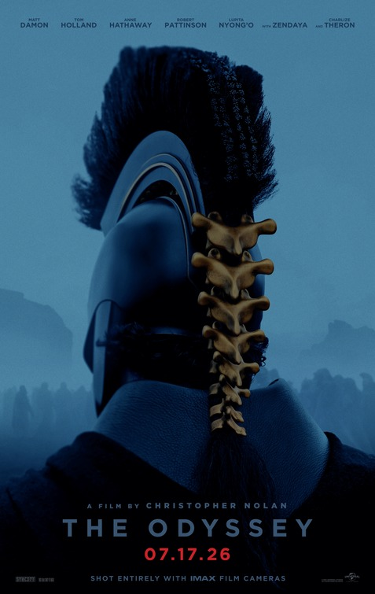

Uma das histórias mais antigas da literatura ocidental ganha uma adaptação cinematográfica pelas mãos do cineasta Christopher Nolan. A Odisseia é um poema épico atribuído a Homero que acompanha as aventuras do herói grego Odisseu (Matt Damon) em sua volta para casa após a Guerra de Troia. O guerreiro enfrenta criaturas míticas e deuses em sua jornada épica de retorno onde sua esposa Penélope (Anne Hathaway) o aguarda. O rei de Ítaca descreve sua trajetória esbarrando com seres como o Ciclope Polifemo, as sereias e a feiticeira/deusa Circe.
Filmes exibidos: 0
>| Filme | Ano | Nota | Status |
|---|---|---|---|
| Verity | 2026 | 6,0 | Em cartaz |
| Resident Evil | 2026 | 7,6 | Em cartaz |
| Outra Mamãe | 2026 | 6,0 | Em cartaz |
| Street Fighter | 2026 | ?,? | Em breve |
| Dentro da Baleia | 2026 | ?,? | Em breve |
| Godzilla Minus Zero | 2026 | 8,4 | Em breve |
Olá! Meu nome é Paulo Helder, sou um estudante de Engenharia de Software na UNEB. Este catálogo nasceu de uma avaliação sobre CSS e, por esse motivo, você está lendo essa mensagem. Aproveite!
O site possui estruturas relativamente simples, pois meu conhecimento nas linguagens é limitado, porém é com a prática que melhoramos. Apesar de simples, o layout está agradável e todos os requisitos foram atendidos. Agradeço a atenção.